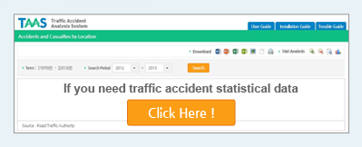

Welcome to
Traffic Accident Analysis System
The Korea Road Traffic Authority (KoROAD) presents road traffic accident statistics which are used to answer requests from the National Assembly, national, regional and local goverments, traffic safety communities and the media regarding policies for traffic safely planning and the overall measure of highway safety. The KoROAD strives to provide and ensure the basic information for achieving advanced traffic safety.
